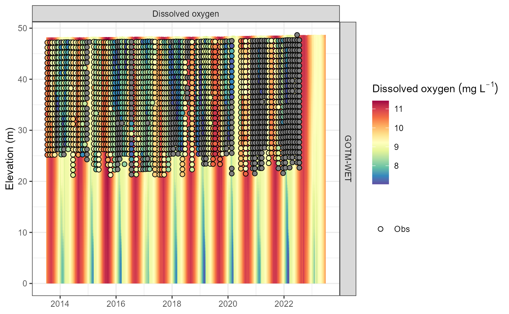

Using LERNZmp with AEME
lernzmp-aeme.RmdIntroduction
The Lake Ecosystem Research New Zealand Model Platform (LERNZmp) is a web platform that provides a user-friendly interface to the lake ecosystem model output for New Zealand lakes. The platform is designed to provide a simple way to explore the model output across multiple lakes and also to compare the model results with observed data.
The platform is located here: LERNZmp. Select and load a lake model output on the “Overview” tab. The model output can be downloaded in the “Download Models” tab. This downloads a “.zip” folder containing the model output for the selected lake(s) as “.rds” files and a lake metadata file “LERNZmp_lake_metadata.csv”.
Using LERNZmp output with AEME
Once you have downloaded the LERNZmp model output and unzipped the folder, you should a similar file structure to the following:
list.files("lernzmp")
#> [1] "LERNZmp_lake_metadata.csv" "LID11133.rds"
#> [3] "LID40102.rds" "LID45819.rds"LERNZmp metadata
The metadata file contains information about the all the lakes in the LERNZmp platform. This includes the lake ID, name surface area (ha), region, geomorphic type, depth, depth measurement (measured or predicted), data (no data/minimal data/limited and irregular/periodic but sparse/seasonal but detailed) and lernzmp file name.
metadata <- read.csv("lernzmp/LERNZmp_lake_metadata.csv")
head(metadata)
#> ID Name Area Region Geomorphic.type Depth
#> 1 LID 1 Onoke 622.34 Wellington Shoreline 8.72
#> 2 LID 3 Kohangapiripiri 10.82 Wellington Shoreline 14.43
#> 3 LID 4 Kohangatera 21.31 Wellington Shoreline 14.80
#> 4 LID 119 LID 119 41.87 Wellington Riverine 3.55
#> 5 LID 195 Nganoke 3.10 Wellington Riverine 3.74
#> 6 LID 229 Pounui 45.95 Wellington Tectonic NA
#> Depth.measurement Data aeme_file
#> 1 Measured Minimal Data LID1
#> 2 Predicted No data LID3
#> 3 Predicted No data LID4
#> 4 Predicted No data LID119
#> 5 Predicted No data LID195
#> 6 Predicted No data LID229RDS files
RDS files are binary files that store R objects, such as data sets,
and are a native format for R. RDS files preserve data types and classes
and are generally smaller than their text file counterparts. The AEME
objects are an S4 object of the class Aeme. This object
class an store model configuration, inputs and outputs and allows for
the easy transfer of a lake model setup.
The lakes included in this example have ID’s LID11133 and LID40102. We will filter the metadata to examine these two lakes.
metadata <- metadata |>
dplyr::filter(aeme_file %in% c("LID11133", "LID40102"))
metadata
#> ID Name Area Region Geomorphic.type Depth
#> 1 LID 11133 Rotorua 8060.23 Bay of Plenty Volcanic 45.27
#> 2 LID 40102 Rotoma 1113.68 Bay of Plenty Volcanic 89.13
#> Depth.measurement Data aeme_file
#> 1 Measured Seasonal but Detailed LID11133
#> 2 Measured Seasonal but Detailed LID40102These are lakes Rotorua (LID11133) and Rotoma (LID40102), respectively.
Build AEME models
We will now build AEME models for these two lakes using the LERNZmp model output. We will first load the AEME object from the “.rds” files.
The Aeme object contains the lake metadata, model
output, and model controls. More details can be found
vignette("intro-aeme"). It is an S4 object of the class
Aeme.
First, make sure to install the AEME package.
# install.packages("pak")
pak::pak("limnotrack/AEME")Once installed, load the AEME package.
library(AEME)
#>
#> Attaching package: 'AEME'
#> The following object is masked from 'package:stats':
#>
#> timeNow, we will load the AEME object for Lake Rotorua (LID11133).
It can be printed to the console to see the contents of the object.
aeme
#> AEME
#> -------------------------------------------------------------------
#> Lake
#> Rotorua (ID: LID11133); Lat: -38.09; Lon: 176.27; Elev: 284.88m; Depth: 48.15m;
#> Area: 80659960 m2
#> -------------------------------------------------------------------
#> Time
#> Start: 2013-07-01; Stop: 2023-06-30; Time step: 3600
#> Spin up (days): GLM: 1095; GOTM: 1095; DYRESM: 1095
#> -------------------------------------------------------------------
#> Configuration
#> Model controls: Present
#> Physical | Biogeochemical
#> DY-CD : Absent | Absent
#> GLM-AED : Present | Present
#> GOTM-WET : Present | Present
#> -------------------------------------------------------------------
#> Observations
#> Lake: Present; Level: Absent
#> -------------------------------------------------------------------
#> Input
#> Inital profile: Present; Inital depth: 48.148m; Hypsograph: Present (n=95);
#> Meteo: Present; Use longwave: TRUE; Kw: 0.5666667
#> -------------------------------------------------------------------
#> Inflows
#> Data: Present; Scaling factors: DY-CD: 1; GLM-AED: 1; GOTM-WET: 1
#> -------------------------------------------------------------------
#> Outflows
#> Data: Present; Scaling factors: DY-CD: 1; GLM-AED: 1; GOTM-WET: 1
#> -------------------------------------------------------------------
#> Water balance
#> Method: 2; Use: obs; Modelled: Absent; Water balance: Present
#> -------------------------------------------------------------------
#> Parameters:
#> Number of parameters: 18
#> -------------------------------------------------------------------
#> Output:
#> Number of ensembles: 1
#> DY-CD: 1
#> GLM-AED: 1
#> GOTM-WET: 1This allows for quick inspection of all the different slots within
the Aeme object. The lake section has the lake metadata,
the time section has the start, stop and spin-up dates, the
configuration section has the model configuration which allows for the
building of the AEME models locally.
model <- c("glm_aed", "gotm_wet") # models to build
path <- "aeme" # directory in which the model configuration will be built
aeme <- build_aeme(aeme = aeme, model = model, path = path,
use_aeme = TRUE, use_bgc = TRUE, print = FALSE)
#> Warning in dir.create(lake_dir, showWarnings = TRUE): 'aeme\LID11133_rotorua'
#> already existsRun AEME models
We will now run the AEME models for the two lakes. This will run the
models with the configurations built in the path directory.
The parallel argument is set to TRUE to run
the models in parallel which can speed up the process.
aeme <- run_aeme(aeme = aeme, model = model, path = path, parallel = TRUE)
#> Running models in parallel... [2025-02-14 07:51:38]
#> Model run complete![2025-02-14 07:53:19]
#> Reading models in parallel... [2025-02-14 07:53:20]
#> Model reading complete![2025-02-14 07:53:51]
aeme
#> AEME
#> -------------------------------------------------------------------
#> Lake
#> Rotorua (ID: LID11133); Lat: -38.09; Lon: 176.27; Elev: 284.88m; Depth: 48.15m;
#> Area: 80659960 m2
#> -------------------------------------------------------------------
#> Time
#> Start: 2013-07-01; Stop: 2023-06-30; Time step: 3600
#> Spin up (days): GLM: 1095; GOTM: 1095; DYRESM: 1095
#> -------------------------------------------------------------------
#> Configuration
#> Model controls: Present
#> Physical | Biogeochemical
#> DY-CD : Absent | Absent
#> GLM-AED : Present | Present
#> GOTM-WET : Present | Present
#> -------------------------------------------------------------------
#> Observations
#> Lake: Present; Level: Absent
#> -------------------------------------------------------------------
#> Input
#> Inital profile: Present; Inital depth: 48.148m; Hypsograph: Present (n=95);
#> Meteo: Present; Use longwave: TRUE; Kw: 0.5666667
#> -------------------------------------------------------------------
#> Inflows
#> Data: Present; Scaling factors: DY-CD: 1; GLM-AED: 1; GOTM-WET: 1
#> -------------------------------------------------------------------
#> Outflows
#> Data: Present; Scaling factors: DY-CD: 1; GLM-AED: 1; GOTM-WET: 1
#> -------------------------------------------------------------------
#> Water balance
#> Method: 2; Use: obs; Modelled: Absent; Water balance: Present
#> -------------------------------------------------------------------
#> Parameters:
#> Number of parameters: 18
#> -------------------------------------------------------------------
#> Output:
#> Number of ensembles: 1
#> DY-CD: 0
#> GLM-AED: 1
#> GOTM-WET: 1In the “Output” section of the Aeme object, the “Number
of ensembles” is set to 1 indicating that there is now output for each
model in the Aeme object.
plot_output(aeme = aeme, model = model, var_sim = "HYD_temp")
#> Warning: Removed 332 rows containing missing values or values outside the scale range
#> (`geom_col()`).
plot_output(aeme = aeme, model = model, var_sim = "CHM_oxy")
#> Warning: Removed 332 rows containing missing values or values outside the scale range
#> (`geom_col()`).
Access AEME input data
The Aeme object contains the input data for the models.
This includes the lake metadata, model controls, and model
configuration. The input slot contains the initial profile
(“init_profile”), initial depth (“init_depth”), hypograph (“hypograph”),
meteorological data (“meteo”), switch for using longwave radiation
(“use_lw”) and light extinction coefficient (“Kw”) for the models.
inp <- input(aeme)
names(inp)
#> [1] "init_profile" "init_depth" "hypsograph" "meteo" "use_lw"
#> [6] "Kw"Hypsograph data
hyps <- inp$hypsograph
head(hyps)
#> elev area depth
#> 1 289.88 92216772 5.0
#> 2 289.38 91198888 4.5
#> 3 288.88 90383984 4.0
#> 4 288.38 89698688 3.5
#> 5 287.88 89045360 3.0
#> 6 287.38 88405268 2.5